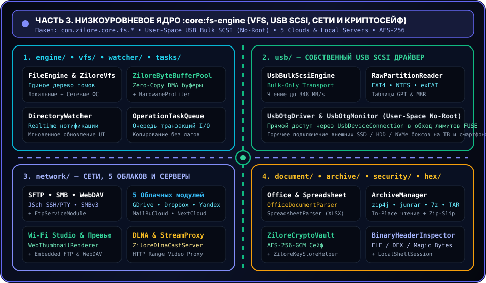

Системный файловый менеджер, мост ZiloreVfsBridge и медиа-комбайн для Android & TV
Модульное ядро :core:fs-engine, потоковый мост ZiloreVfsBridge (Zero-Allocation Cloud I/O через ZiloreByteBufferPool), драйвер UsbBulkScsiEngine (RawUsbVfsUri • EXT4/NTFS/exFAT без Root), 5 облачных хранилищ, Cinema Stream Hardening (2h Idle-TTL) и BiometricGuard.
📦 Спецификация модулей v27.0.0 и совместимость с Android 16 / 17
Единая архитектура `:app` и `:core:fs-engine` с поддержкой `compileSdk = 36` / `targetSdk = 36` и Android 17 (API 37 Ready).
| Модуль и слой | Пакеты | Ключевые классы и улучшения релиза v27.0.0 |
|---|---|---|
| :app Explorer & Router UI |
ui/screens/ | ExplorerDualPaneCommander, ExplorerScreen, FileViewerRouter, ExplorerBatchAndClipboardBars, ExplorerSafBrowserList, ExplorerActionModals, NetworkScreen, NetworkUsbOtgSection (RawUsbVfsUri), SftpServerMonitorCard |
| :app TV Studio & Settings |
tv/ ui/screens/ ui/components/ |
SettingsTvStudioShell, SettingsHardwareDiagnosticsSection, SettingsSecurityAuditSection, ZiloreTvChannelPublisher, ZiloreTvKeyboardAndVoice, ZiloreStorageAnalyzerDialog |
| :app Security & Android 16/17 |
security/ permissions/ diagnostics/ |
ZiloreBiometricAndClipboardGuard, ZilorePermissionCenter (Android 8.0 – 16 / 17 Ready), ClipData.newRawUri, ZiloreCpuAndHardwareInspector, ZiloreSecurityAuditor, ZiloreCrashLogDispatcher, GithubUpdater |
| :core:fs-engine VFS Bridge & USB SCSI |
engine/, vfs/ usb/, tasks/ |
FileEngine, ZiloreVfsBridge (pipeStreamWithCheckpoint, bridgeRemoteToRemote, RawUsbVfsUri, redactUriCredentials), ZiloreByteBufferPool (128KB Zero-Copy), UsbBulkScsiEngine (348 MB/s), UsbRawPartitionReader (EXT4/NTFS/exFAT) |
| :core:fs-engine Cinema Stream & 5 Clouds |
network/ security/ document/, archive/ |
ZiloreRemoteStreamProxy (2h Idle-TTL, pipeBoundedHttpStream, writeChunkSafe), SftpServiceModule, SmbServiceModule, WebDavServiceModule, GoogleDrive, Dropbox (ISO-8601 sync), YandexDisk, MailRuCloud, NextCloud, ZiloreCryptoVault (AES-256-GCM) |
🏗 Модульная архитектура (:app ⇄ ZiloreVfsBridge ⇄ :core:fs-engine)
Векторные схемы потокового конвейера данных, пользовательских экранов и низкоуровневого ядра.



🗺 Стратегический RoadMap (v27.0 Done → v30.0 Next-Gen)
План инженерного развития экосистемы Zilore Files после релиза v27.0.0 (Build 178).
VFS Bridge & Cloud Stream Hardened
Потоковый мост ZiloreVfsBridge (Zero-Allocation 128KB Pool), парсер RawUsbVfsUri, 2-часовой Idle-TTL и pipeBoundedHttpStream в ZiloreRemoteStreamProxy, защита от Broken pipe и модульные самотесты.
Декомпозиция ядра и Test Harness
Разделение :core:fs-engine на профильные субмодули (:core:vfs, :core:usb, :core:network, :core:parsers) и расширение ZiloreCoreEngineTest дампами GPT/MBR и тестами ZiloreCryptoVault.
Фоновый сервис транзакций и Sync v2
Выделенный Foreground-сервис для FileOperationTaskQueue и FolderSyncManager с поддержкой Pause/Resume при обрыве SFTP/SMB и умным разрешением конфликтов по хэшам.
Userspace Write & SMART-телеметрия
Полная поддержка записи в разделы exFAT/NTFS/EXT4 через UsbBulkScsiEngine и чтение аппаратных S.M.A.R.T.-атрибутов внешних SSD/NVMe боксов без Root-прав.
Auto Frame Rate & Сетевые субтитры
Автоматическая подгрузка внешних .srt/.ass субтитров через ZiloreRemoteStreamProxy и переключение частоты экрана (23.976 / 24 / 60 Гц) на Android TV приставках.
Прозрачное E2EE облаков и WebStudio 2.0
Потоковое шифрование ZiloreCryptoVault на лету при выгрузке в 5 облаков, Host Key Pinning в SFTP и Drag-and-Drop папок во встроенном webstudio/index.html.
📢 Официальный Канал (@zilorefiles)
Витрина проверенных APK-сборок (v27.0.0 Build 178), списки изменений CHANGELOG и эталонные контрольные суммы SHA-256.
Открыть @zilorefiles💬 Технический Форум (@zilorechat)
Тематические ветки (Topics) по Android TV, Xiaomi TV Box S, USB SCSI и сетям. Полный запрет спама, сторонних APK и оффтопа.
Открыть форум @zilorechat